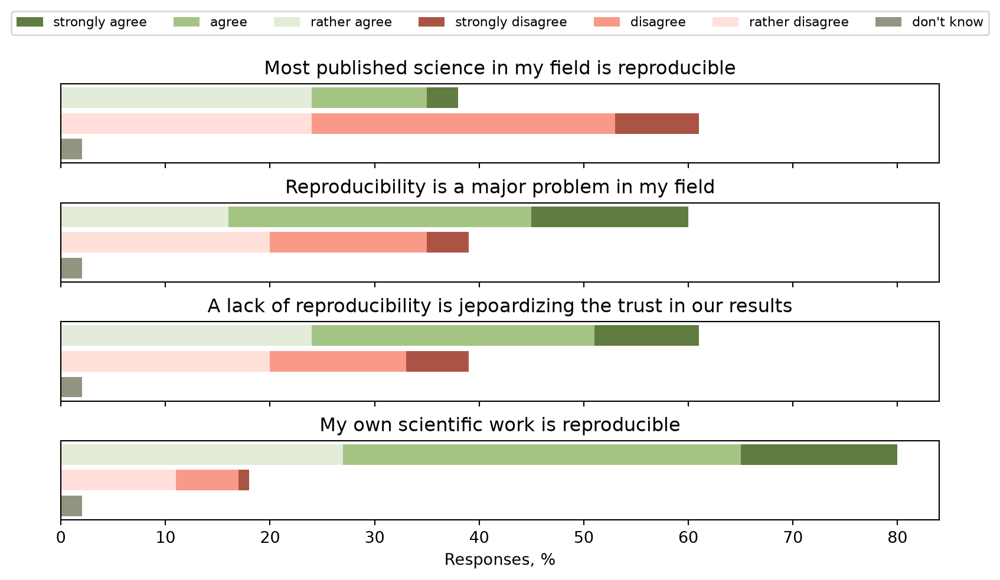
Reproducibility in Scientific Computing
Jack Franklin
ICCS - University of Cambridge
Marion Weinzierl
ICCS - University of Cambridge
What is reproducibility?
In scientific research, a result is:

We will use the definitions used in The Turing Way
What is reproducibility?
For a result to be reproducible, it should be possible for someone else to:
- Access your code
- Obtain all the relevant data
- Run the analysis defined by your code on the data and get the same result
Any time, anywhere!
Why is reproducibility important?
In the context of scientific computing/analysis, we want to be able to:
- Verify our own results
- Verify the results of others
By making our work reproducible, we ensure that both these things are not just possible, but straightforward!
Reproducibility in Earth sciences
Perception of reproducibility:
Reproducibility in Earth sciences
Reasons for non-reproducibility:
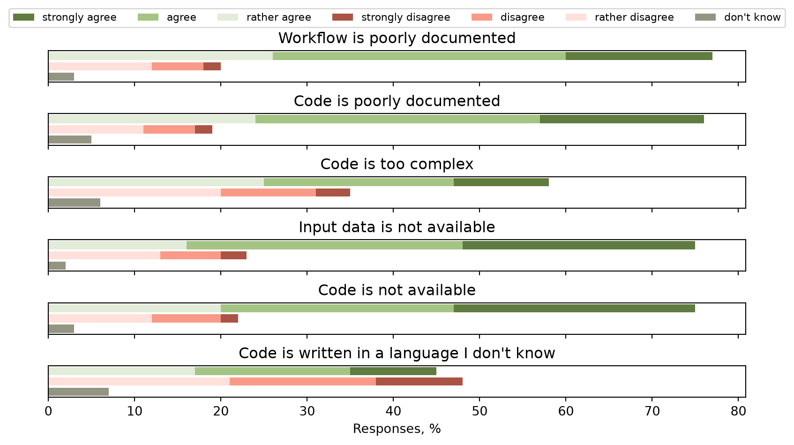
Reproducibility in Earth sciences
Other findings:
- 82% of researchers are self taught programmers
- 40% do not know who legally owns the code they are writing
- More than 35% of respondents say it can take 2-3 weeks to train a new PhD with the research software used by the group
- 23% said up to one year, 8% said more than a year!
Additional benefits
- Reproducibility is not just for scientific results
- By making our software more reproducible, we also get to reap the benefits!
Safely implement changes
- Automation and testing help catch mistakes before they become an issue
Rerun analyses
- Create reusable pipelines
- Untangle data from code so analysis can run on different inputs
Faster onboarding
- Better documentation on how to use the software
- Relevant metadata present - no hunting down dependencies
Better collaboration
- Version control for keeping track of code history
- Accessibility of code and data
Where do we go from here…
Throughout the rest of this session, we will walk through the steps that we can take to go from an ad hoc collection of scripts into a reproducible scientific workflow!
Reproducibility must haves:
- Version Control
- READMEs
- Licenses
- Automation
- Testing
Version Control
What are Version Control Systems (VCSs)?
- Tools to track changes to code
- Maintain a history of changes as a series of snapshots
- Allow to go back in time to a previous state
- Facilitate collaboration
- Require very little overhead for a huge benefit


Why Git?
- De facto standard for VC in the open source community
- Git is open source itself!
- Has a rich ecosystem around
- Distributed VC approach (vs centralized)
- Supports non-linear development (branching)
- Gives fine-grained control
- High performance/Scalable

Github: Hosting and collaboration

- Code hosting platform
- Most widely used to host open source software
- Eases the development with tools
- Pull Requests (PRs)
- Issues and Discussions
- More advance features like Continuous Integration, Automated Testing
git by xkcd used under cc by-nc 2.5
What is a Git repository?
- A place where you can store your code, your files, and each file’s revision history.
- Contains a
.gitfolder at the root which does all the git magic behind the scenes.
Creating a git repository
- Navigate to a folder you want to work in, and create a new folder to contain your repository:
Then initialise the folder
.git
A hidden .git folder has been created in your folder. This contains everything Git needs to work.
What is a Git commit?
- You can think of a commit as a snapshot of your work at a particular time
- You can navigate between commits easily with git
- This allows you to switch easily between different versions of your work
- When you commit, rather than saving all the files in a project every time, git is efficient and only stores the files which have been changed between the previous commit and your current one
- The commit also stores a reference to its parent commit
Committing is a three part process:
- Modify: change the file in your working tree, i.e., go in and edit the file as usual
- Stage: Tell git that you would like this file to be included in your next commit
- Commit: Tell git to take a snapshot of the files you staged
At each step in the process, the file is stored in a different area:

Git States
git has four main states that your files can be in:
- Untracked: You’ve created a new file and not told git to keep track of it.
- Modified: You’ve changed a file that git already has a record of, but have not told git to include these changes in your next commit. We say these files are in the working tree.
- Staged: You’ve told git to include the file next time you do a commit. We say these files are in the staging area.
- Committed: The file is saved in it’s present state in the most recent commit.
Create an untracked file:

Create an untracked file:
git status
git status
Highlights your working branch -> main
Reports commit status -> none yet
Highlights untracked files -> new.txt
Proposes adding these to git with git add
Add the untracked file to the staging area:

git add
git add
Moves file(s) into “Staging area” ready for commit
Committing your changes:

Committing your changes:
Commit your file to the local git repo
git commit: tells git you want to commit-m "Commit message": adds a human-readable description to thelogof this commit. This is important as it tells you and others what the commit intent is.
Writing meaningful commit message
There are many conventions and good practices to write good commit messages. Based on scope of the project and other factors particular conventions are chosen.
Commit the staged file
git log
git log
Displays commits in reverse chronological order.
Includes full identifier, author and date
git log --graphshows the dependencies of commits in graph view- especially useful in non-linear development
What is a Git branch?
- A branch is a pointer to a commit, and updates as new commits are made.
- The work done so far has been on the
mainbranch. - Using multiple branches enable collaborative work in parallel without interfering with the changes of others.
Creating a git branch:
1. Initially, ‘main’ points to the most recent commit.
2. Upon creation, ‘my-branch’ points to the same commit.
3. As new commits are made ‘my-branch’ updates to point to these.
Creating a git branch and checking it out
- Create a new branch using
git branch my-new-branch - Switch to the branch using
git switch my-new-branch - Or, more conveniently, we can combine these actions into one:
- Make a change in your new branch by editing new.txt and committing the changes.
Note
Older versions of git may need to use checkout (-b) instead of switch (-c)
Switching and merging branches
- Return to the main branch:
- Open the new.txt file, what’s inside?
- Now merge the new branch into main:
Note
You can use git switch - as a shortcut for returning to the previous branch.
Why and when to use branches?
Feature branching
- Enables working on multiple tasks concurrently.
- Keeps work-in-progress code out of the main branch.
- Can regularly commit smaller changes without worry.
Tip
Keep branches short-lived. Long branches with large changes become harder and harder to merge.
Version Control in practice
What to add to VC
DON’T do this:
Our repository should only contain:
- Code/scripts
- Documentation
- Metadata
- i.e. just text files
There will be some exceptions to this rule, but for the vast majority of cases it will be true.
What to add to VC
- Large datafiles should be hosted separately (e.g. on Zenodo)
- External dependencies should be declared
- e.g. link to Zenodo dataset in docs and code
- Use
.gitignoreto automatically ignore any unwanted files- e.g. build outputs
Atomic commits
- Commits should relate to specific logical changes
- Makes it easier to understand what changed
- Can undo changes
- Easier to locate breaking changes (see
git bisect)
Atomic commits
Bad
Still bad!
Better!
Aside - testing with worktrees
- git worktrees are like “local clones” of a repository
- Create a worktree:
- Will make a new directory, with only files that are tracked
- Can use as a cleanroom to ensure all dependencies are there
- For more info:
git worktree add --help
What to do next?
- The repository can then also be hosted a remote service (e.g. GitHub, GitLab, Codeberg, Bitbucket)
- This will make collaboration with other people a lot easier!
- It will also mean that any work done can be accessed by collaborators
Version Control Exercises
Hopefully, at this point in the week, you will all be comfortable with version control!
The exercises in this course will work on improving an example set of python scripts, to make them more reproducible!
These scripts are hosted on the same GitHub repository as these slides: (https://github.com/Cambridge-ICCS/ReproducibilityInComputingCourse) Specifically in the directory exercises/problem.
Tasks:
- Download the Python scripts from the GitHub repository
- Create a new
gitrepository on your local machine - Add the Python scripts to
gitfor version control!
Dependencies
Dependencies
- All software has dependencies
- Some are more obvious than others:
- Data/input
- Packages/libraries e.g.
numpy,Eigen - System libraries
- Compiler/Interpreter
- If your code can’t run without it, it’s a dependency!
How to discover dependencies
- Some dependencies may be “implicit”
- For example, you may have a library installed on your system
- Since the code “just works”, you may not be aware of the dependency
- To find these, try running on a different system (or multiple) and see what breaks
How to declare dependencies
- List them in a tracked file in the repository
- e.g. add a “Dependencies” section to your README.md
- Specify:
- Versions of each dependency e.g.
numpy2.3.9 - Where/how to acquire the dependency
- Versions of each dependency e.g.
How to declare data dependencies
- Links to publicly accessible data dependencies
- Zenodo or some other long term solution
- Reference specific versions of the data
- Use DOI from hosting platform
- Ideally automate the fetching of the data
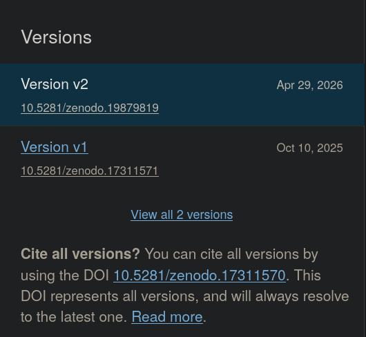
Dependency metadata
- There are automated ways of resolving dependencies
- Usually language/tool specific
- Some tools automatically update dependency metadata
- e.g. Rust’s
cargo, Julia’sPkg,uvfor Python - Project file: Depencies and compatible versions
- Lock file: Write exact version (plus other metadata e.g. source) of every dependency you are using
- Important to track both - lock files record the exact environment you use
- e.g. Rust’s
System dependencies - Conda
- Python centric package manager
- Can be used for installing python packages
- Also able to manage environments
- useful for per-project dependencies
- can install system dependencies
- even different python versions!
- Available on most HPC systems (usually as Miniconda)
- Can export environments to text-based files
- There are other alternatives, e.g.
pixi, butcondais most available
System dependencies - Containers
- Containers package up code and all dependencies
- Virtualised operating system
- Faster than a virtual machine with many of the benefits
- Examples:
- Docker (Closed source but popular)
- Podman (Open source alternative)
- Apptainer (HPC focused/compatible)
- Portable and cross-platform

System dependencies - Nix/Guix
- Declarative package managers
- Use pure functional languages to create environments
- same inputs = same outputs
- Useful for caching artifacts
- Packages are hashed
- can lookup if package already exists locally
- Publicly hosted and versioned package repository
- All packages have defined and unchanging dependencies
- Handle all dependencies automatically
- even linked libraries, so no hidden dependencies!
Dependencies exercises
Returning to the Python scripts, try to answer the following questions:
- What are the python dependencies?
- What are the system dependencies?
- What are the data dependencies?
- Extension
xarraymatplotlibnetcdf4/h5netcdf!
The last dependency is tricky, because it is not required by xarray, unless you want to read/write netcdf files! If we include the dependencies of the dependencies (e.g. numpy, which xarray and matplotlib both rely on without importing it directly in our scripts), the list is even longer!
ValueError: found the following matches with the input file in xarray's IO backends: ['netcdf4', 'h5netcdf']. But their dependencies may not be installed, see:
https://docs.xarray.dev/en/stable/user-guide/io.html
https://docs.xarray.dev/en/stable/getting-started-guide/installing.html- python3
- netcdf
- lapack library
- blas library
- sqlite
- glibc
- mpdecimal
- libffi
- …
- HadCRUT 5.0.0, specifically:
HadCRUT.5.0.0.0_analysis_summary-series_global_annual.ncHadCRUT.5.0.0.0_analysis_summary-series_northern-hemisphere_annual.ncHadCRUT.5.0.0.0_analysis_summary-series_southern-hemisphere_annual.ncHadCRUT.5.0.0.0_analysis_summary-series_global_monthly.nc
- Using your favourite dependency management tool (e.g. Conda, Nix), create a reproducible environment configuration to handle the python and system dependencies.
- Create a way to automatically fetch the data dependencies when using the scripts.
Automation
Automation
Automation is important in scientific computing:
- It is common to have different workflows using one piece of software
- Many different research artifacts may be produced from one analysis/dataset
- Figures, data files, statistical results etc.
- Different people may need/want to create the same artifacts
By automating tasks as much as possible, we make it easier to perform the actions and produce the results we want
Why automate?
There are many benefits to automating workflows:
- Faster
- Code as instructions
- No need to write how to do X
- Can be tested!
- Flexibility
- Improved control
- Extendable
- Less chance of mistakes
- Computers are good at following instructions
Automation and reproducibility
- Automating workflows tracks how research artifacts were actually produced
- Makes it easier for others to use and verify our work
- Results are more trustworthy
flowchart TB I[Load Data] --> A[Compute A] I --> B[Compute B] B --> C[Compute C] A --> D[Produce Plot] B --> E[Produce Plot] C --> F[Produce Plot]
How to automate
- Bash scripts
- Common on HPC, works on all Linux machines
- Can easily use command line programs
- More complicated scripts can become verbose
- All variables are strings (lots of footguns)
- Python scripts
- Much more “batteries included” e.g. argument parsing is built into the core library
- Access to python libraries
- Not always available, but will run on any machine with python installed
- Not as easy to invoke external programs
- Scripts should be written like any other code!
Workflow engines
- Sometimes workflows become more complicated than a script can handle
- Workflow engines allow you to declare your workflow, and then handle running it
- Some can also handle submitting HPC jobs (check your HPC docs/sysadmins first!)
- Examples:
- Snakemake
- Cylc
- Common Workflow Language (CWL) implementations
Automation Exercises
- What tools/technologies could be used to automate producing the plots?
- How could we automatically fetch the data needed for the plots
Extension
- Create an automated pipeline for producing all the figures
- Automate the fetching of the necessary data
Testing
Testing
- Important to test code
- Check
- that code does what it should
- that results of code do not change with code changes
- that the code still works after dependency changes
- that the code works for edge cases
Testing and Reproducibility
Tests are your “reproducibility insurance”
Flags (hopefully) when something is dodgy in your codebase
- Find the problems before someone else does!
Improve reliability and trustworthiness
A very short intro to testing
Unit tests
- Test the smallest logical unit of the code
- Ensure each component works as intended
- Test functions for known results
- Compare to previously produced results
Integration tests
- Test that components work together
- Try to have a range of complexity of tests
- Can use previous results to validate model
- Ensure no regression of results
Adding tests to a project
- Often we inherit large projects with no unit tests
- How do we improve test coverage in this case?
Adding tests to a project
- Create integration tests - use previous results or create “golden outputs”
- Identify and extract parts of the code which can be split apart
- Create unit tests for the new functions
- Run the integration tests to ensure results have not changed
- Repeat 2-4 until all code has unit tests
- Whenever you change a part of the code, try to use this method
- Code coverage will slowly improve, with less extra work
Automating tests (CI etc)
- Automate testing to ensure tests pass for every commit
- Also useful for tests that can take a long time/need lots of resources
- If hosting code on e.g. GitHub, GitLab etc, can use Continuous Integration (CI)
Testing with pytest
What is pytest?
- A testing framework for python
- Makes it a lot easier to write tests
- Is used extensively by python packages
- Automatically discovers and runs tests
pytest basics
- Tests are .py files and live in a
tests/directory - Each test group is a function with prefix
test_ - Use the
assertkeyword to validate an expression is true
terminal
===================================== test session starts =====================================
platform linux -- Python 3.14.7, pytest-9.1.1, pluggy-1.6.0
rootdir: /tmp/example
collected 1 item
tests/test.py . [100%]
====================================== 1 passed in 0.00s ======================================
pytest basics
What if we implemented add wrong?
[jack@nixos:~]$ pytest tests/test.py
platform linux -- Python 3.14.7, pytest-9.1.1, pluggy-1.6.0
rootdir: /tmp/example
collected 1 item
tests/test.py F [100%]
========================================== FAILURES ===========================================
__________________________________________ test_add ___________________________________________
def test_add():
assert add(0, 0) == 0
assert add(1, 0) == 1
> assert add(0, 1) == 1
E assert -1 == 1
E + where -1 = add(0, 1)
tests/test.py:7: AssertionError
=================================== short test summary info ===================================
FAILED tests/test.py::test_add - assert -1 == 1
====================================== 1 failed in 0.02s ======================================
Parametrized tests
- pytest implements a lot of useful tools to make writing tests easier
- One of these is test parametrization, which allows us to reuse tests for different inputs
- We only need to give the
pytest.mark.parametrizedecorator:- The names of the input variables
- A list of tuples of inputs
What to test
- Beyond using fixed points, we can think about how a function should behave
- For example, our add function should have the following properties
add(x,0) == xadd(x, y) == add(y, x)add(x, add(y, z)) == add(add(x, y), z)
Writing code for unit testing
- Unit testing forces us to write code that is minimal
- Decompose functions into their smallest logical unit
- Smaller functions are easier to test (and review!)
- Fewer/simpler inputs
- Can help to think of edge cases
Easier to test this:
Than this:
Exercises
In the example repository, there is a file called ‘climate_model.py’. This file contains some functions that are used in ‘plot4.py’
Task:
- Write some basic tests for these functions (think about inputs that give known outputs)
- Think about what properties/behaviours these functions should have, and write tests for them
- Look at the other python files, and see if any functions can be extracted and tested
Documentation
Documentation
- Not all information can be conveyed in code
- We need to tell other people how to use our projects
- And sometimes ourselves!
- Documentation covers anything outside of the code/metadata
README
- Markdown file at the project root
- Should contain:
- Description of project
- Dependencies
- Instructions on building/running
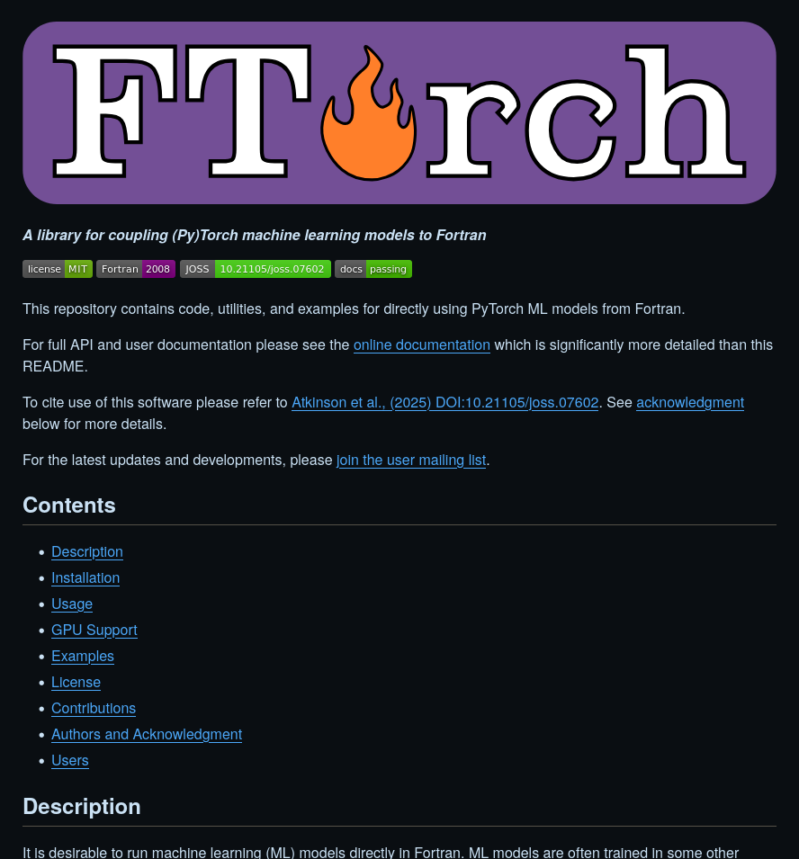
Licences
- Licences are necessary for reproducibility!
- They define how code can be used/reused
- Enforce openness of code and data
- FOSS licenses eg. GPL, MIT, BSD, etc
- Many explanations of which licence to use exist (and I’m not a lawyer!)
Docstrings
def energy_balanced_temperature(emissivity, albedo):
"""
The temperature of Earth assuming 0D energy balance model
Parameters
----------
emissivity: float
Effective emissivity of the Earth
albedo: float
Effective albedo of the Earth
Returns
-------
temperature: float
Temperature of Earth's surface assuming 0D energy balance model [K]
"""
return (SOLAR_CONSTANT * (1.0 - albedo) / (4.0 * emissivity * SIGMA))**0.25Generating Docs
- Use tools that generate docs from source code
- Single source of truth
- Comments/Docstrings embedded in code
- Reduce separation between code and docs
Documentation Exercises
Tasks:
- Create a README for the repository
- Add comments and docstrings where you think is necessary
Extension
Use an documentation tool, such as Sphinx, to automate building the documentation.
FAIR and FAIR4RS Principles
The FAIR principles were first introduced for data, and later adapted for research software (FAIR4RS) 1.
FAIR stands for
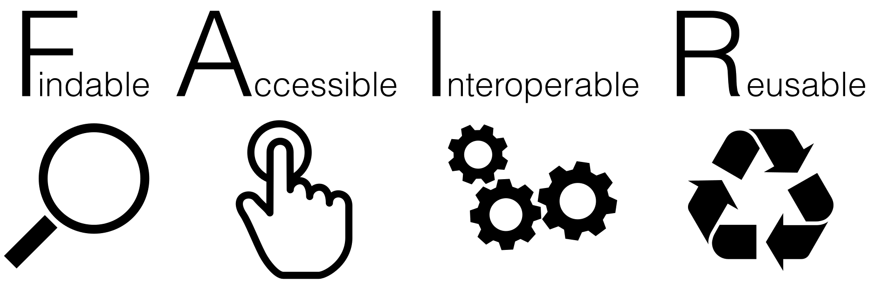
Findable
Software, and its metadata, are easy for humans and machines to find.
- Cite your software and data in your papers (DOIs).
- Document which results you got with which software and data version.
- Use version control.
- Document your data and software.
Accessible
Software, and its metadata, are retrievable via standardised protocols.
- Version controlled, documented and identifiable.
- Ideally, software and data are open source.
- Use a permissive license.
Interoperable
Software interoperates with other software by exchanging data and/or metadata, and/or through interaction via a application programming interfaces (APIs), described through standards.
- Provide clear and well documented interfaces.
- Avoid reinventing the wheel - use standards. (There have been clever people before you…)
Reusable
Software is both usable (can be executed) and reusable (can be understood, modified, built upon, or incorporated into other software).
- Again: Documentation, licenses, standards.
- Build your software in a modular way.
Reproducibility Initiatives
Efforts to improve software/research reproducibility
Various groups and organisations work for better reproducibility.
Conferences and journals start to ask for software, data etc. to back up research findings.
Software sustainability and research software engineering have become a thing (internationally).
But still not widely known outside of the bubble!
UK Reproducibility Network
Peer-led consortium within the UK, international networks
National Steering Group, local and institutional groups
Training, events, engaging with stakeholders
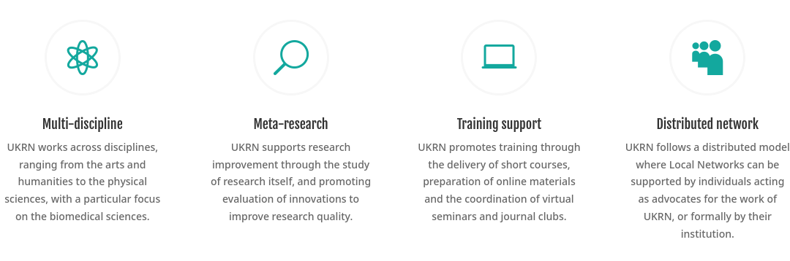
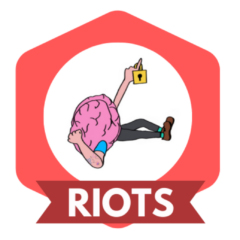
RIOT Science- Reproducible Interpretable Open Transparent
- Groups at universities (mostly Psychology, mostly UK)
- Conferences, events, seminars open to everyone
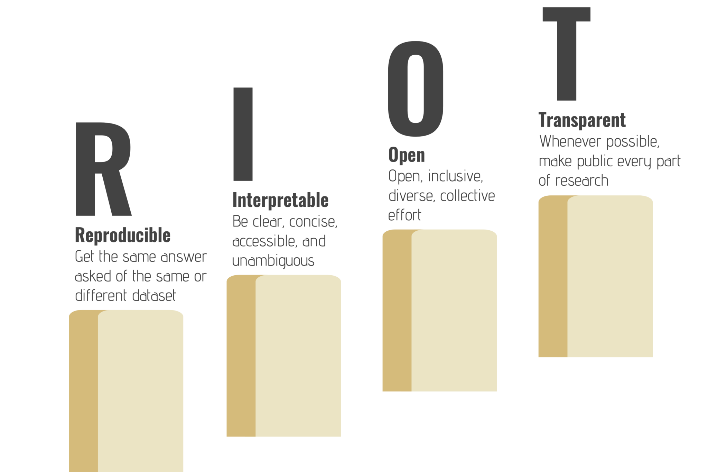
The Turing Way
- Handbook
- Community
- Collaboration
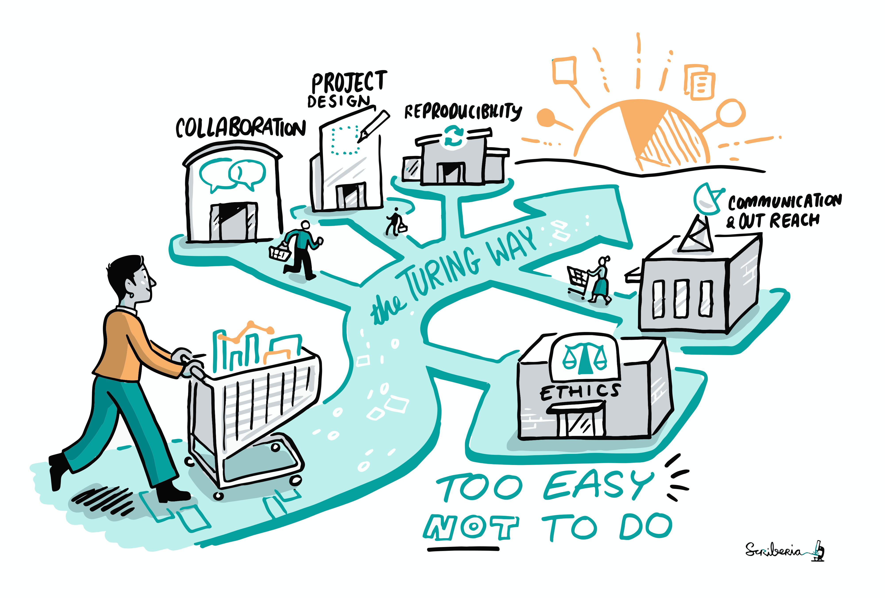
ACM Reproducibility Badges
- Applied to research artifacts e.g. papers
- Used across ACM journals and conferences
- Rewards researchers for reproducibility efforts
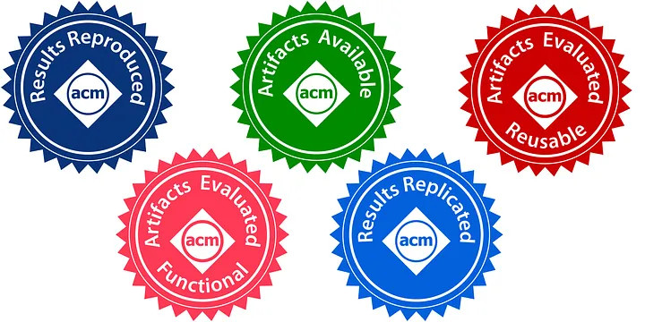
SC Reproducibility Initiative
SC (formerly Supercomputing), The International Conference for High Performance Computing Networking, Storage, and Analysis
Initiative started in 2015
- Artifact Descriptions (ADs) optional for the first few years
- used in Student Cluster Competition
Then gradually made mandatory for more categories/prizes
- Computational Results Analysis (CRA)
- Artifact Evaluation (AE) appendix still optional
AD/AE committee evaluates appendices and recommends ACM badge awards
Reproducibility challenge introduced 2021
ReproHack
Challenge: Reproduce the results of a paper in one day!
Started in 2016 and 2017 as satellite events of OpenCon (inspired by a course by Owen Petchey)
Developed further by Anna Krystalli in her SSI fellowship
More events, a team formed, remote ReproHacks became a thing….
ReproHack Hub launched in 2021
ReproHack Hub
- Material and checklists for organisers
- Paper database
- Evaluation forms
- Events listing
- Support through ReproHack Slack
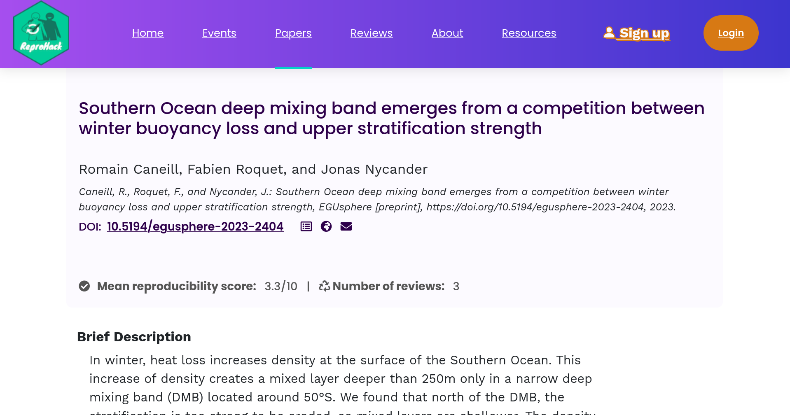
And more!
JOSS
ReScience C
CODECHECK
ML Reproducibility Challenge
Climate Informatics Reproducibility Challenge
…
Conclusion/Outlook
Reproducibility is important
Primary benefits:
- Confidence in scientific results
- Peer review/cross analysis
Additional benefits:
- Allows for code reuse
- Better collaboration
Ingredients for reproducibility:
- Version Control
- Dependency Metadata
- Public Accessibility
- Licence
- Documentation
Even better if
- Testing for:
- Verification
- Regression checks
Make it easy!
- When starting from scratch, much easier to implement these as you go
- For a large project:
- Add to VC
- Document dependencies
- Follow best practice for new code
- Implement small improvements whenever modifying
ICCS Summer School 2027
Confirmed for 28/06 - 02/07!
Register your interest here:
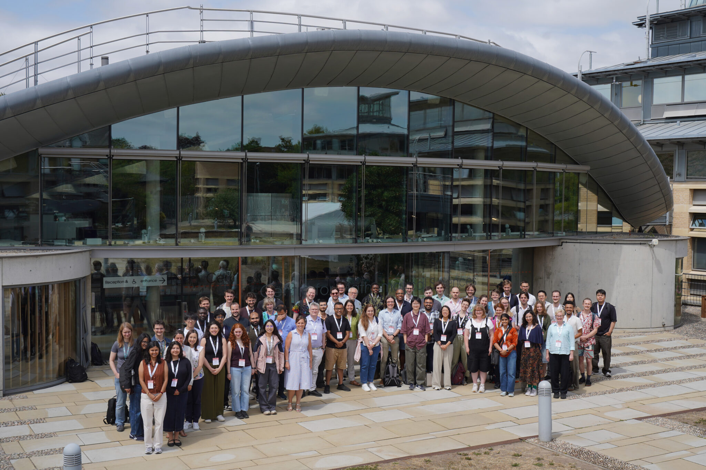

Comments